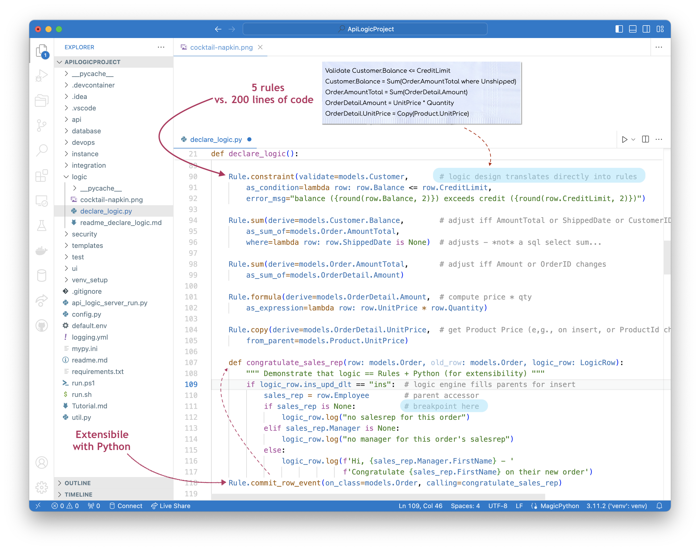

Logic: Why
 TL;DR - n-fold Reduction of Backend Logic With Declarative (Spreadsheet-like) Rules
TL;DR - n-fold Reduction of Backend Logic With Declarative (Spreadsheet-like) Rules
For transaction systems, backend multi-table constraint and derivation logic is often nearly half the system. API Logic Server automates such logic with unique declarative (spreadsheet-like) rules, which can be extended with Python.
Declare in Python, debug with your IDE, extend with Python events as needed.
Rules are 40X more concise than code.
Rules help automate maintenance, since they are automatically called and ordered.
Rules are architected for re-use, automatically applied to all UI Apps, Services, and your custom APIs.
Rules are architected for scalable multi-table performance, with automatic pruning and use of adjustment logic to avoid expensive aggregate / multi-row queries.
- Such optimizations can easily represent multiple orders of magnitude - contrast to Rete engines, ORM services and
iteratorverbs
This page describes:
- how "code explosion" makes logic important to your project
- how you use rules: delcare, extend, debug
- how the rules operate: watch, react, chain
- several key aspects of rules, and
- how rules compare to similar-looking technologies
Problem: Code Explosion
In conventional approaches, such logic is nearly half the system, due to code explosion. A typical design specification of 5 lines explodes into 200 lines of legacy code.
Let's imagine we have a "cocktail napkin spec" for checking credit, shown (in blue) in the diagram below. How might we enforce such logic?
-
In UI controllers - this is the most common choice. It's actually the worst choice, since it offers little re-use between forms, and does not apply to non-UI cases such as API-based application integration.
-
Centralized in the server - in the past, we might have written triggers, but a modern software architecture centralizes such logic in an App Server tier. If you are using an ORM such as SQLAlchemy, you can ensure sharing with
before_flushevents as shown below.
After we've determined where to put the code, we then have to write it. Our simple 5 line cocktail napkin specification explodes into 200 lines of legacy code):

It's also incredibly repetitive - you often get the feeling you're doing the same thing over and over.
And you're right. It's because backend logic follows patterns of "what" is supposed to happen. And your code is the "how".
So, API Logic Server provides Declarative Business Rules for multi-table derivations and constraints
Rules typically automate over 95% of such logic, and are 40X more concise. You can think of rules as conceptually similar to spreadsheet cell formulas, applied to your database.
For a procedural / declarative analysis by CoPilot, click here.
Rules: Declare, Extend, Debug
Use your IDE to declare rules, extend them with Python, and debug them as described below.
Declare: Python
For this typical check credit design (in blue), the 5 rules shown below (lines 90-105) represent the same logic as 200 lines of code:

See the code here
"""
Logic Design ("Cocktail Napkin Design") for User Story Check Credit
Customer.Balance <= CreditLimit
Customer.Balance = Sum(Order.AmountTotal where unshipped and ready)
Order.AmountTotal = Sum(OrderDetail.Amount)
OrderDetail.Amount = Quantity * UnitPrice
OrderDetail.UnitPrice = copy from Product
"""
Rule.constraint(validate=models.Customer, # logic design translates directly into rules
as_condition=lambda row: row.Balance <= row.CreditLimit,
error_msg="balance ({row.Balance}) exceeds credit ({row.CreditLimit})")
Rule.sum(derive=models.Customer.Balance, # adjust iff AmountTotal or ShippedDate or CustomerID changes
as_sum_of=models.Order.AmountTotal,
where=lambda row: row.ShippedDate is None and row.Ready == True # adjusts - *not* a sql select sum...
Rule.sum(derive=models.Order.AmountTotal, # adjust iff Amount or OrderID changes
as_sum_of=models.OrderDetail.Amount)
Rule.formula(derive=models.OrderDetail.Amount, # compute price * qty
as_expression=lambda row: row.UnitPrice * row.Quantity)
Rule.copy(derive=models.OrderDetail.UnitPrice, # get Product Price (e,g., on insert, or ProductId change)
from_parent=models.Product.UnitPrice)
"""
Demonstrate that logic == Rules + Python (for extensibility)
"""
def congratulate_sales_rep(row: models.Order, old_row: models.Order, logic_row: LogicRow):
""" use events for sending email, messages, etc. """
if logic_row.ins_upd_dlt == "ins": # logic engine fills parents for insert
sales_rep = row.Employee
if sales_rep is None:
logic_row.log("no salesrep for this order")
elif sales_rep.Manager is None:
logic_row.log("no manager for this order's salesrep")
else:
logic_row.log(f'Hi, {sales_rep.Manager.FirstName} - '
f'Congratulate {sales_rep.FirstName} on their new order')
Rule.commit_row_event(on_class=models.Order, calling=congratulate_sales_rep)
Notes:
-
Rather than learn a new studio, use your IDE code completion services for logic declaration - just type
Rule.Your IDE and Python combine to enable Python as a DSL. -
See here for the list of rule types, and recommended training for learning to use rules.
-
Unlike procedural code, you neither "call" the rules, nor order their execution
- The Logic Bank rule engine watches SQLAlchemy updates, and ensures the relevant rules are optimized and executed in the proper order per system-discovered rule dependencies.
Extend: Python
While 95% is certainly remarkable, it's not 100%. Automating most of the logic is of no value unless there are provisions to address the remainder.
That provision is standard Python, provided as standard events: Logic = Rules + Python. (See lines 87-100 in the event example, below). This will be typically be used for non-database oriented logic such as files and messages, and for extremely complex database logic.
The system provides logic_row to access the old_row, determine the verb, etc. For more information, see Logic Row.
`event` example

If code completion isn't working, ensure your
venvsetup is correct - consult the Trouble Shooting Guide.
Debug: your IDE
Test your logic by making updates using the Admin App, Swagger API documentation, cURL, etc.
As shown in Logic Debugging, you can use your IDE debugger to logic rules. In addition, logic execution creates a useful Logic Log, showing the rules that execute, the row state, and nesting.
Iterate: alter rules
To iterate (debug cycles and maintenance), simply alter the rules and add new ones - in any order. The system ensures they will be called, in the proper order. This helps to ensure correctness, and eliminates the need to determine where to insert new logic.
Documentation and Testing
Use any standard test framework for system testing. One option is to use the Behave framework to capture requirements as tests, and then execute your test suite. API Logic server can generate a wiki Behave Logic Report, reflecting the requirements, including the rules that execute in each test.
Watch, React, Chain
The LogicBank rule engine opertes by plugging into SQLAlchemy beforeFLush events, to:
- watch for changes - at the attribute level; for changed attributes...
- react by running rules that referenced changed attributes, which can...
-
chain to still other attributes that refer to those changes.
- Note these might be in different tables, providing automation for multi-table logic
- Special optimizations are provided for performance, as described below.
For more information, see Logic Operation.
Key Aspects of Logic
While conciseness is the most immediately obvious aspect of logic, rules provide deeper value as summarized below.
| Concept | Rule Automation | Why It Matters |
|---|---|---|
| Re-use | Automatic re-use over all resources and actions | Velocity / Conciseness: Eliminates logic replication over multiple UI controllers or services. |
| Invocation | Automatic logic execution, on referenced data changes | Quality: Eliminates the "code was there but not called" problem. Rules are active, transforming ‘dumb’ database objects into smart business objects |
| Execution Order | Automatic ordering based on dependencies | Maintenance: Eliminates the "where do I insert this code" problem - the bulk of maintenance effort. |
| Dependency Management | Automatic chaining | Conciseness: Eliminates the code that tests "what's changed" to invoke relevant logic |
| Multi-Table Chaining | Multi-Table Transactions | Simplicity: Eliminates and optimizes data access code |
| Persistence | Automatic optimization | Performance: Unlike Rete engines which have no concept of old values, transaction logic can prune rules for unchanged data, and optimize for adjustment logic based on the difference between old/new values. This can literally result in sub-second performance instead of multiple minutes, and can be tuned without recoding.. |
See also the FAQs.
Concise: Dependencies
Consider the rule Customer.Balance = Sum(Order.AmountTotal where unshipped). In a procedural system, you would write dependency mangement code, checking:
- Did the
Order.AmountTotalchange? - Did the
Order.DateShippedDatechange? - Was the Order inserted?
- Was the Order deleted?
- Did the
Order.CustomerId(foreign key) change?
In a declarative system, dependency management is automated, eliminating this effort. This is a signifcant reason that rulea are n-fold more concise as explained at the top of this page.
Automatic Ordering
While the conciseness of rules is probably their most striking aspect, automatic ordering provides significant value in automating maintenance. In a procedural system, introducing a change requires archaeology: read the existing code to determine where to insert the new code.
In a declarative system, ordering is automated. The system parses your derivation rules to determine dependencies, and uses this to order execution. This occurs once per session on activation, so rule declaration changes automatically determine a new order.
This is significant for iterative development and maintenance, eliminating the archaeology time spent determining where do I insert this new logic.
Automatic Reuse
In a procedural system, reuse is achieved with careful manual design. In a declarative system, reuse occurs automatically, at multiple levels:
-
Architectural Reuse: rules are defined for your data, not a specific page or service. They therefore to apply to all transaction sources.
- Internally, the LogicBank rule engine plugs into SQLAlchemy
beforeFlushevents.
- Internally, the LogicBank rule engine plugs into SQLAlchemy
-
Use Case Reuse: just as a spreadsheet reacts to inserts, updates and deletes to a summed column, rules automate adding, deleting and updating orders. This results in a "design one / solve many" scenario.
Our cocktail napkin spec is conceptually similar to a set of spreadsheet-like rules that govern how to derive and constrain our data. And by conceiving of the rules as associated with the data (instead of a UI button), rules conceived for Place Order automatically address these related transactions:
- add order
- Ship Order illustrates cascade, another form of multi-table logic
- delete order
- assign order to different customer
- re-assign an Order Detail to a different Product, with a different quantity
- add/delete Order Detail
Scalability: Prune and Optimize
In a procedural system, you write code to read and write rows, optimize such access, and bundle transactions. In a declarative system, persistence is automated - and optimized.
When Performance Matters
Modern computers are incredibly fast, and modern architectures can provide clustering. Productive languages (like Python) should no longer be a concern.
That said, it is still important to consider algorithms that can incur substantial database / network overhead. That is why the issues discussed here are important. Experience has shown these can result in response times of seconds instead of minutes.
For example, the balance rule:
- is pruned if only a non-referenced column is altered (e.g., Shipping Address)
- is optimized into a 1-row adjustment update instead of an expensive SQL aggregate
For more on how logic automates and optimizes multi-table transactions, click here.
FAQ: Similar Looking Alternatives
At first glance, declarative logic looks quite similar to other familiar approaches. But while the code may look similar, the differences are quite significant.
For example, consider the rule:
SQL: declarative read, not logic
SQL itself has a select sum() that looks equivalent. It's a declarative read that you call from your procedural code.
So, the difference is not the syntax, it's that the calling code is procedural. Procedural Logic robs you of all the advantages noted above: not concise, not ordered to facilitate maintenance, and error prone.
The sum rule is, in fact, not a "read" at all. It's an end condition, that the system guarantees will be true when the transaction is committed. Declarative logic is a set of such rules managed by the system - you neither call nor order them.
Iterator Verb: declarative logic?
Python (and several Low Code scripting languages) provide power verbs like:
balance = sum(order.amount_total for order in customer.orders if order.date_shipped is None)
The code above implies an expensive multi-row query to read the orders for a customer. There are several problems:
- It's often not declarative - if you must write code that determines when to call this (aka dependency management), your logic is procedural, not declarative.
- It's expensive if there are many orders
- It doesn't even work if
order.amount_totalis not stored. Adding up all theItem.Amountvalues - for each of the orders - makes it n times more expensive.
Visual Programming
Flowchart-like diagrams are attractive, and quite approopriate for process logc (a complement to transaction logic). But it is highly procedural, so the 200 lines of procedural code turns into 200 nodes in a diagram. Declarative rules are a far more appropriate technology for transaction logic.
Rete: too coarse
Rete engines provide similar inference rules. Experienced developers know they can be useful (e.g., Decision Tables), but should be avoided for multi-table logic. This is because they do not - cannot - provide adjustment logic. For more information, see RETE.
ORM: too coarse
Some ORMs (Object Relational Managers), such as Hibernate, allow similar verbs. But again, experienced developers avoid these because they perform poorly:
- They are too coarse: a
select sumis issued when any order change is made (no pruning) - Cost: as above, it's expensive if there are many orders
GenAI: Frankencode
You might imagine LLM translating requirements to code. This approach fails, and even it worked, it would be undesirable to manage a large explosion of frankencode.